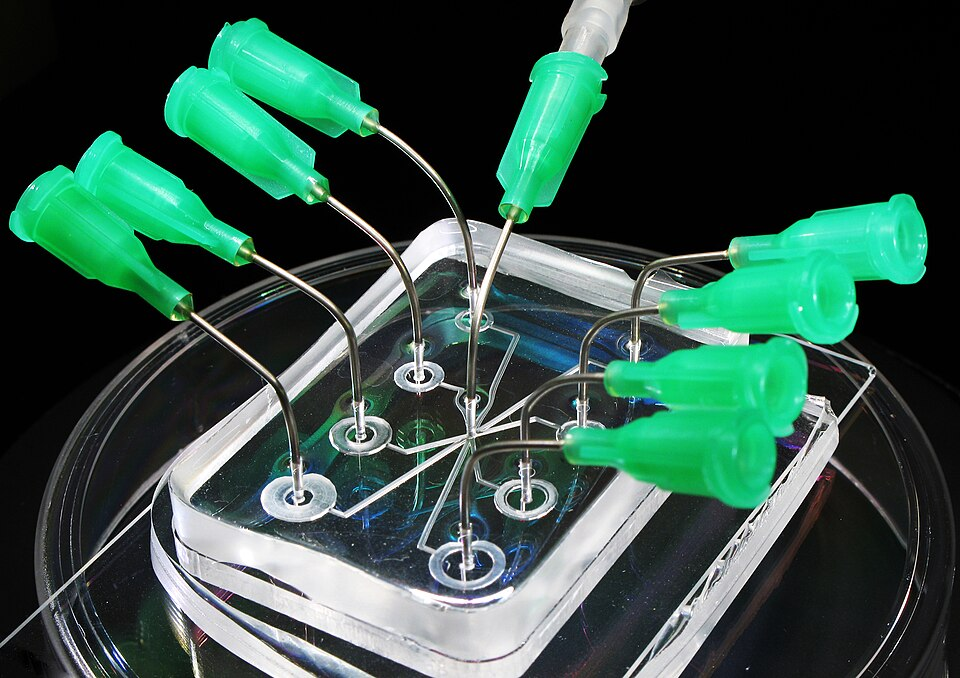
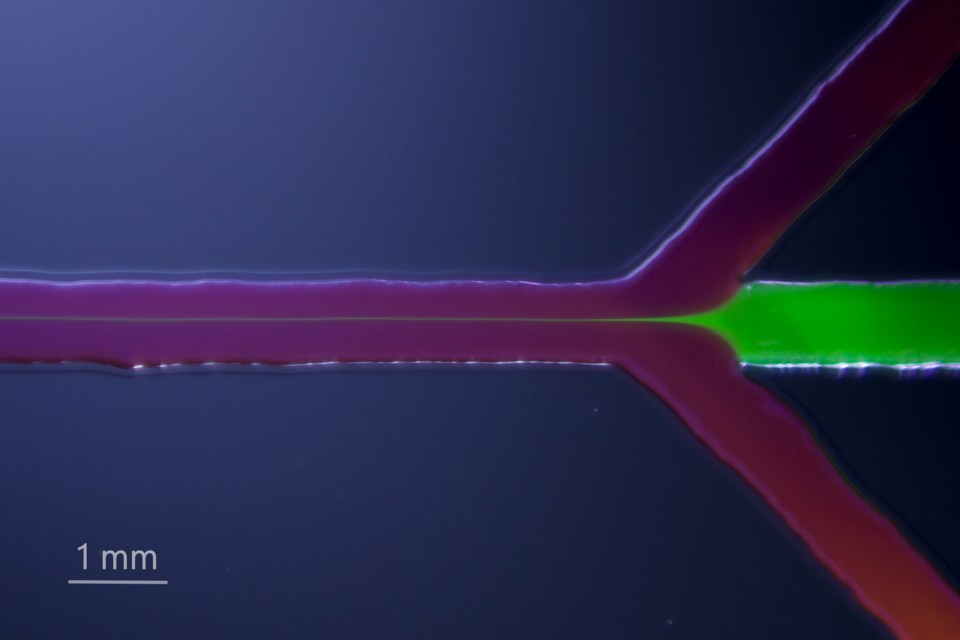

Fluidos en canales más finos que un pelo
Un chip del tamaño de una estampilla, con canales más finos que un pelo, puede mezclar reactivos, separar moléculas o fabricar miles de gotas idénticas por segundo. Es la microfluídica: el arte de manejar volúmenes diminutos de líquido. Pero a esa escala los fluidos se comportan de una manera que contradice todo lo que aprendimos con el agua de la canilla.
Todd Squires y Stephen Quake, del Instituto de Tecnología de California, describen la microfluídica como un campo dedicado a la plomería miniaturizada y la manipulación de fluidos [1]. Su inspiración es el circuito integrado: así como la microelectrónica redujo enormemente el espacio, el trabajo y el tiempo necesarios para calcular, la microfluídica promete automatizar a gran escala la química y la biología, con muchos experimentos rápidos y en paralelo que consumen muy poco reactivo [1]. En los chips más avanzados, unas líneas de control manejan válvulas que funcionan como compuertas y bombas, y llevan los reactivos por los canales hasta cámaras donde reaccionan [1].
Squires y Quake organizan la física de estos volúmenes de nanolitros con una serie de números adimensionales, cada uno de los cuales mide la importancia relativa de un fenómeno [1].


El más famoso es el número de Reynolds, que compara las fuerzas de inercia con las viscosas [1]. Squires y Quake señalan, con ironía, que puede ser el menos interesante para la microfluídica: casi sin excepción, los dispositivos trabajan con números de Reynolds tan chicos que la inercia es irrelevante [1]. Las ecuaciones de Navier-Stokes pierden su término no lineal y quedan las ecuaciones de Stokes [1]. Como la inercia es la que produce las inestabilidades y la turbulencia, en los microcanales el flujo es siempre laminar [1]. Pero, advierten, uno tiene que desaprender toda una vida de intuición con fluidos a Reynolds alto para pensar bien la microfluídica [1].
El físico Edward Purcell lo ilustró en una charla famosa, «La vida a bajo número de Reynolds»: para un hombre que nada, el número de Reynolds puede ser de 104; para los microorganismos de los que hablaba, de 10−4 o 10−5, y para ellos la inercia es totalmente irrelevante [2].
Nadar en miel: Purcell invitaba a imaginar cómo sería para nosotros ese mundo: estar en una pileta llena de melaza, sin poder mover ninguna parte del cuerpo más rápido que un centímetro por minuto, como las agujas de un reloj [2]. En ese mundo no hay impulso que te lleve: si dejás de moverte, te detenés (una lectura de la imagen de Purcell).
Sin turbulencia, mezclar se vuelve difícil. Squires y Quake lo dicen con un ejemplo memorable: en nuestro mundo, los remolinos turbulentos mezclan todo rápidamente; sin la mezcla turbulenta y la convección, tardaríamos alrededor de un año en sentir el olor de nuestros pies después de sacarnos los zapatos [1]. En un microcanal, la mezcla ocurre solo por difusión, y puede tardar minutos o más [1].
La competencia entre el transporte por el flujo y la difusión la mide el número de Péclet [1]:
Squires y Quake muestran que el número de anchos de canal que hacen falta para mezclar del todo dos corrientes es del orden de Pe [1]. Para una proteína pequeña, con D ≈ 40 μm²/s según su tabla, en un canal de 100 μm a 100 μm/s, Pe vale unos 250 (un cálculo propio con esos valores): hacen falta unos 250 anchos de canal, 2,5 cm, para mezclarla.
Esa dificultad también se aprovecha. En el sensor en T, dos corrientes se juntan y fluyen una al lado de la otra; las moléculas de cada una se difunden hacia la otra, y midiendo el ancho de la zona de mezcla se puede estudiar la concentración o la difusividad de una sustancia [1]. En el filtro en H, se elige el largo del canal para que las partículas grandes no alcancen a cruzar mientras las moléculas chicas sí, y así se las separa sin membrana [1].
Fábrica de gotas: Squires y Quake cuentan que, en 2001, Thorsen y colaboradores fabricaron gotas de tamaño controlado inyectando agua en una corriente de aceite en una unión en T [1]. La tensión superficial tiende a reducir el área de la interfaz y las tensiones viscosas la estiran y arrastran: la competencia entre las dos la vuelve inestable y la corta en gotas [1]. Esa competencia la mide el número capilar [1]. Así se fabrican emulsiones con gotas todas iguales.
La microfluídica maneja líquidos en canales de micrómetros. A esa escala la inercia desaparece, el flujo es siempre laminar y las corrientes viajan juntas sin mezclarse, salvo por difusión. Esa física extraña es a la vez un problema, porque mezclar cuesta, y una herramienta, porque permite separar sustancias y fabricar gotas idénticas: la base de los laboratorios en un chip.
Pregunta para la comunidad: Con el número de Péclet, ¿qué conviene hacer para que dos líquidos se mezclen más rápido en un microcanal: hacerlo más angosto o más ancho? ¿Más rápido o más lento?